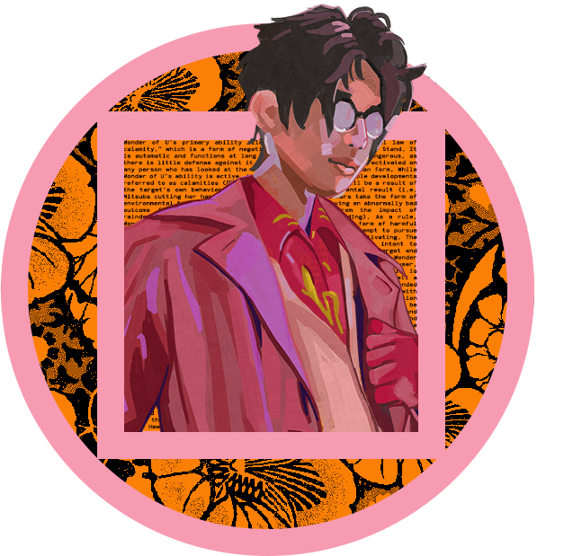

HI HEY HELLO!
I'm Adriel a Canadian Based Indonesian artist and backend game developer. Recent graduate from Humber College Ontario, Canada. I have over 5 years of experince in Unity, 3 years in Unreal, with an aditional 2 years of experience in Godot
Art Programs I use: Photoshop, Illustrator, After Effects, Premiere Pro, Blender, Paint tool sai
Game Engines/frameworks: Unity, Unreal, Game Maker Studio 2, OpenGL, SDL, Godot
Languages: C++, C#, Lua, Python, Javascript, GDScript